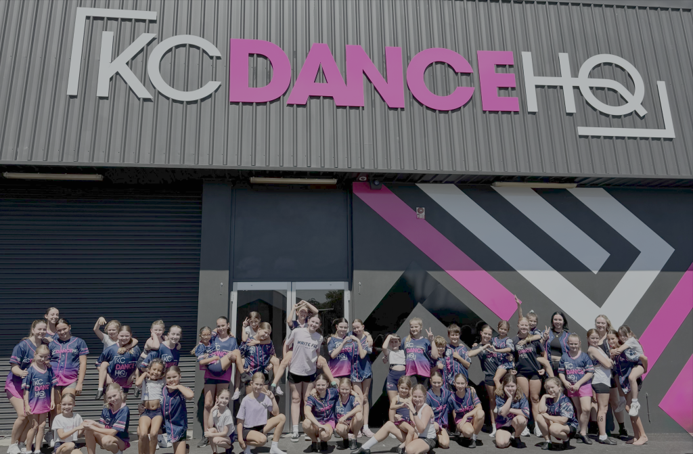
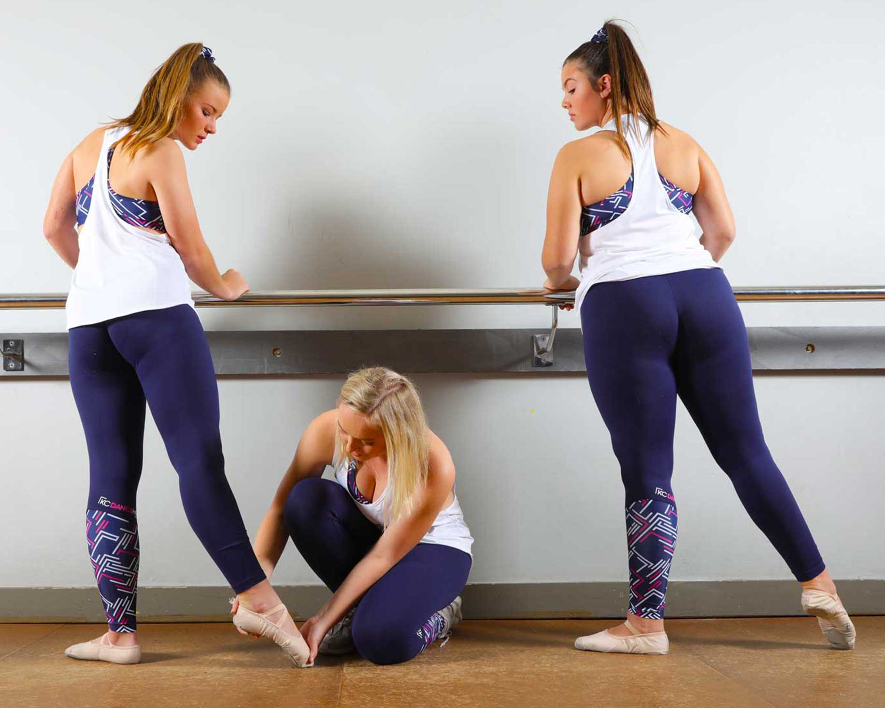

Know your child is being taught properly.
Technique, structure and class care are presented clearly before families are asked to choose a timetable.
KCDanceHQ gives children, teens and adults the care of professional teachers, the confidence of a purpose-built studio and the relief of a dance culture that is not built around competition pressure.

Technique, structure and class care are presented clearly before families are asked to choose a timetable.
The tone stays warm and human, with real studio moments supporting the promise of belonging.
The message stays focused on quality recreational dance education and a positive weekly experience.
Reassurance comes first: a professional venue, kind teachers, age-appropriate pathways and a simple enquiry that invites guidance.
New families see the full KCDanceHQ venue first, including the facade, signage and branded studio environment.
Professional teaching sits beside a friendly recreational culture, so parents understand the standard without fearing the pressure.
The enquiry path asks for age, experience and interests so the team can recommend the right class.



The Bennetts Green facility is a major part of the KCDanceHQ brand. Landscape images stay landscape so the rooms, signage and branded surfaces read properly.
Families can quickly understand where their dancer fits without making KCCubs carry the whole school story.

KCCubs gives little dancers a warm introduction to music, movement, confidence and class routines.
Explore KCCubs
Ballet, jazz, tap, hip hop, acro, cheer, lyrical, contemporary and adult classes sit under the same promise: learn well, feel welcome and avoid competition-first pressure.

Leads KCDanceHQ with a culture that is professional, positive and built around belonging.
Families can recognise the adults behind the classes: capable, approachable and correctly represented.

Calm, caring and connected to the KC community.

Builds strong foundations with technical care.

Supports expressive dancers with warmth and creative energy.
 Watch the studio video
Watch the studio video
Real footage helps parents understand the community, the class energy and the way dancers experience KCDanceHQ before they send an enquiry.
Watch on YouTubeClear answers reduce the worries that slow parents down, then point them towards a guided first conversation.
Yes. Share your dancer's age and experience level, and the team can suggest a suitable starting point.
No. KCDanceHQ is focused on quality recreational dance education, not compulsory competition pathways.
KCCubs is the preschool programme for ages 2 to 5, sitting clearly inside the wider KCDanceHQ school.
Start with an enquiry. The team can help match age, personality and experience to a class that feels right.
The best first step is a simple conversation about your dancer's age, confidence and interests.